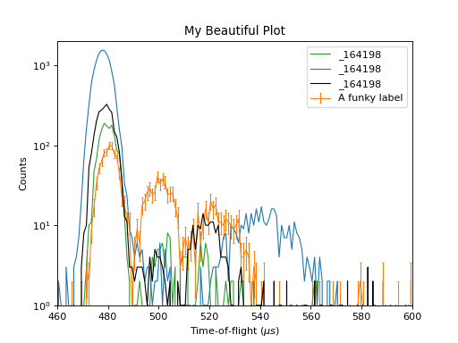
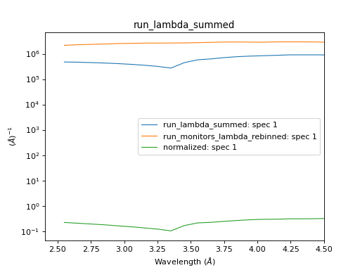

Python in Mantid: Solution 2#
All the data for these solutions can be found in the TrainingCourseData on the Downloads page.
A - Processing ISIS Data#
# import mantid algorithms, numpy and matplotlib
from mantid.simpleapi import *
import matplotlib.pyplot as plt
import numpy as np
# Load the main data file and its monitor
Load(Filename='LOQ48097.raw', OutputWorkspace='Small_Angle', LoadMonitors='Separate')
# Convert monitor to wavelength
ConvertUnits(InputWorkspace='Small_Angle_monitors', OutputWorkspace='Small_Angle_monitors', Target='Wavelength')
# Convert data to wavelength
ConvertUnits(InputWorkspace='Small_Angle', OutputWorkspace='Small_Angle', Target='Wavelength')
# Rebin the monitors with a suggested set of parameters
rebin_var = Rebin(InputWorkspace='Small_Angle_monitors', OutputWorkspace='Small_Angle_monitors', Params='2.2,-0.035,10')
# Extract binning params from the first Rebin-algm
rebin_alg = rebin_var.getHistory().lastAlgorithm()
params = rebin_alg.getPropertyValue('Params')
# Log the Rebin params at the level information
logger.information("Rebin parameters: {}".format(params))
# Rebin the data with the params extracted from the earlier Rebin
Rebin(InputWorkspace='Small_Angle', OutputWorkspace='Small_Angle', Params= params)
# Extract the Spectrum for correcting the data
ExtractSingleSpectrum(InputWorkspace='Small_Angle_monitors', OutputWorkspace='Small_Angle_monitors', WorkspaceIndex=1)
# Correct the data by dividing by the monitor spectrum
Divide(LHSWorkspace='Small_Angle', RHSWorkspace='Small_Angle_monitors', OutputWorkspace='Corrected_data')
B - Plotting ILL Data#
# import mantid algorithms, numpy and matplotlib
from mantid.simpleapi import *
import matplotlib.pyplot as plt
import numpy as np
_164198 = Load('164198.nxs')
fig, axes = plt.subplots(edgecolor='#ffffff', num='164198-1', subplot_kw={'projection': 'mantid'})
axes.plot(_164198, color='#2ca02c', label='164198: spec 100', linewidth=1.0, specNum=100, zorder=2.1)
axes.plot(_164198, color='#1f77b4', label='164198: spec 200', linewidth=1.0, specNum=200, zorder=2.1)
axes.errorbar(_164198, capsize=1.0, color='#ff7f0e', label='A funky label', linewidth=1.0, specNum=50)
axes.plot(_164198, color='#000000', label='164198: spec 300', linewidth=1.0, markeredgecolor='#d62728', markerfacecolor='#d62728', specNum=300, zorder=2.1)
axes.set_title('My Beautiful Plot')
axes.set_xlabel(r'Time-of-flight ($\mu s$)')
axes.set_ylabel('Counts')
axes.set_xlim([460.0, 600.0])
axes.set_ylim([1.0, 2000.0])
axes.set_yscale('log')
axes.legend() #.draggable()
#fig.show()
(Source code, png, hires.png, pdf)
{kind=link}
{kind=link}

C - Processing and Plotting SNS Data#
# import mantid algorithms, numpy and matplotlib
from mantid.simpleapi import *
import matplotlib.pyplot as plt
import numpy as np
Load(Filename=r'EQSANS_6071_event.nxs',OutputWorkspace='run',LoadMonitors='1')
ConvertUnits(InputWorkspace='run_monitors',OutputWorkspace='run_monitors_lambda',Target='Wavelength')
Rebin(InputWorkspace='run_monitors_lambda',OutputWorkspace='run_monitors_lambda_rebinned',Params='2.5,0.1,5.5')
ConvertUnits(InputWorkspace='run',OutputWorkspace='run_lambda',Target='Wavelength')
Rebin(InputWorkspace='run_lambda',OutputWorkspace='run_lambda_rebinned',Params='2.5,0.1,5.5')
SumSpectra(InputWorkspace='run_lambda_rebinned', OutputWorkspace='run_lambda_summed')
Divide(LHSWorkspace='run_lambda_summed', RHSWorkspace='run_monitors_lambda_rebinned', OutputWorkspace='normalized')
from mantid.api import AnalysisDataService as ADS
run_lambda_summed = ADS.retrieve('run_lambda_summed')
run_monitors_lambda_rebinned = ADS.retrieve('run_monitors_lambda_rebinned')
normalized = ADS.retrieve('normalized')
fig, axes = plt.subplots(edgecolor='#ffffff', num='run_lambda_summed-1', subplot_kw={'projection': 'mantid'})
axes.plot(run_lambda_summed, color='#1f77b4', label='run_lambda_summed: spec 1', linewidth=1.0, specNum=1)
axes.plot(run_monitors_lambda_rebinned, color='#ff7f0e', label='run_monitors_lambda_rebinned: spec 1', linewidth=1.0, specNum=1)
axes.plot(normalized, color='#2ca02c', distribution=False, label='normalized: spec 1', linewidth=1.0, specNum=1)
axes.set_title('run_lambda_summed')
axes.set_xlabel('Wavelength ($\AA$)')
axes.set_ylabel('($\AA$)$^{-1}$')
axes.set_xlim([2.405, 4.5])
axes.set_yscale('log')
axes.legend() #.draggable()
#fig.show()
# NOTE: This script could be improved further with adding comments,
# and extracting and logging values for filename and binning params,
# as in Exercise 2A above.
(Source code, png, hires.png, pdf)
{kind=link}
{kind=link}
